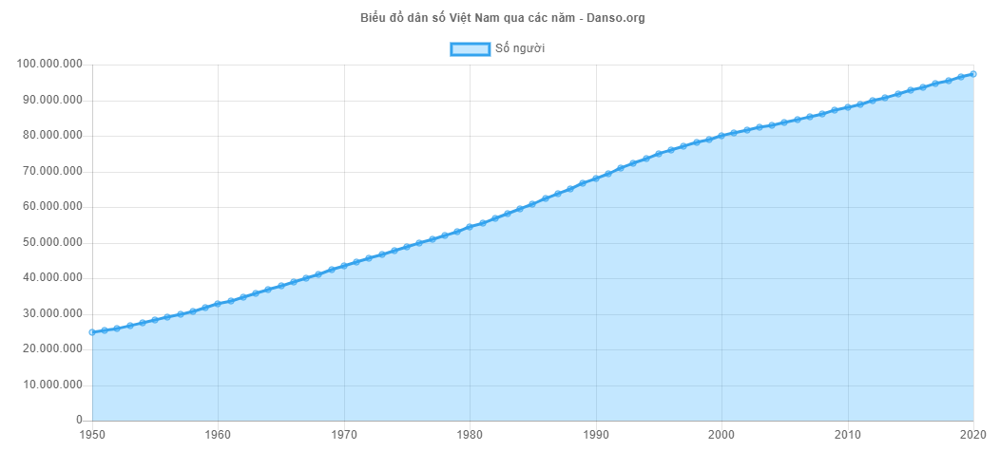
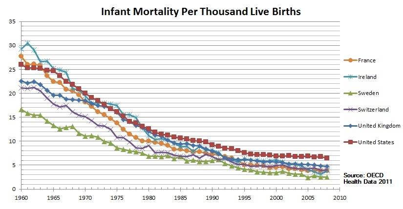
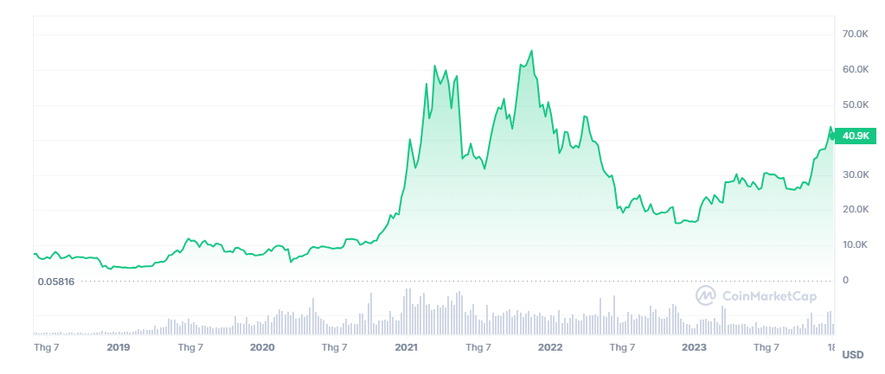
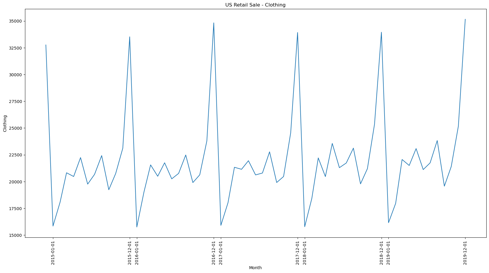
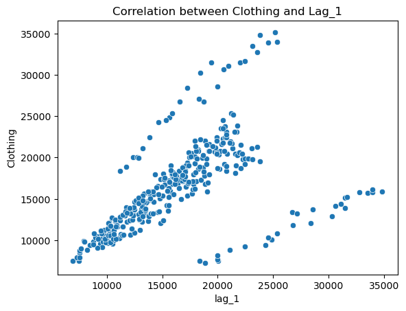

Chương 1 Giới thiệu Cơ bản về Time Series
1.1 Time Series là gì
Chuỗi thời gian là tập hợp các quan sát \(y_t\) theo thời gian tuần tự.
Chuỗi thời gian rời rạc là tập hợp các điểm quan sát có khoảng cách quan sát lớn hơn một giây. Chuỗi thời gian rời rạc có thể có những đặc điểm:
Thời gian thu thập các điểm dữ liệu có thể là không thường xuyên ( mỗi điểm mỗi phút) hoặc không quy tắc (hành vi đăng nhập của người dùng tại bất cứ thời điểm nào).
Có thể bị mất dữ liệu do mất kết nối mạng hoặc máy chủ không phản hồi.
Chuỗi thời gian liên tục là tập hợp các điểm quan sát có khoảng cách quan sát là một giây.
Thời gian là gì
Thời gian có thể định nghĩa theo:
- Giờ, phút giây
- Theo không gian: Máy thứ nhất, máy thứ hai trong cùng một băng chuyền
- Theo độ sâu: Xuống 1 milimet, xuống 2 milimet
1.2 Các patterns Time Series
Khi mô tả về chuỗi thời gian, chúng ta thường nhắc đến các yếu tố như xu hướng, chu kỳ và theo mùa.
Xu hướng
Chúng ta nói dữ liệu có tính xu hướng khi nó tăng hoặc giảm trong một thời gian dài, xu hướng không nhất thiết phải là tăng/giảm tuyến tính, nó có thể là đường cong. Một chuỗi thời gian có thể tồn tại cả xu hướng tăng và xu hướng giảm cùng một lúc.
Ví dụ về dân số Việt Nam có xu hướng tăng hằng năm

Ví dụ về tỉ lệ tử vong của trẻ sơ sinh có xu hướng giảm dần thời gian nhờ có sự tiến bộ về y tế 
Ví dụ về sự thay đổi của giá Bitcoin theo thời gian, giá bitcoin có xu hướng tăng mạnh từ giữa tháng 08/2020 đến 03/2021, đến tháng 11/2021 bắt đầu có xu hướng giảm dần 
Thời vụ
Một chuỗi thời gian có tính chất thời vụ khi các giá trị của chuỗi thời gian bị ảnh hưởng bởi thời điểm nào đó trong năm hoặc theo ngày của mỗi tuần. Tính chất thời vụ luôn có tần suất tăng/giảm cố định và đã biết trước. Ví dụ như
Số lượng hành khách đặt vé máy bay tăng cao vào các ngày lễ tết.
Lượng khách trong nhà hàng tăng cao vào các ngày cuối tuần.
Lượng quần áo mua cao nhất vào tháng 12 cuối năm và thấp nhất vào tháng 1 mỗi năm

Chu kì
Biến đổi chu kỳ xảy ra khi một dữ liệu tăng giảm không có tần suất cố định. Những biến động này thường xảy ra do điều kiện kinh tế và hay gọi là “chu kì kinh doanh”. Độ dài của một chu kì thường ít nhất là 2 năm.
Irregularity Unexpected situations/events/scenarios and spikes in a short time span.
1.3 Các đặc điểm của Time Series
1.3.1 Stationary (Tính dừng của dữ liệu)
Chuỗi thời gian dừng là chuỗi có các đặc trưng thống kê như mean, variance, autocorrelation không đổi theo thời gian.
1.3.2 Lag
Lag của Time Series thể hiện việc lùi về một mốc trước đó. Ví dụ lag(1) nghĩa là lùi về trước đó 1 đơn vị \(X_{T-1}\). Lag(n) nghĩa là lùi về trước đó n đơn vị \(X_{T-n}\)
Ví dụ về số lượng quần áo bán ra của US từ năm 1992 đến năm 2019
Month Clothing
0 1992-01-01 6938
1 1992-02-01 7524
2 1992-03-01 8475
3 1992-04-01 9401
4 1992-05-01 9558
... ... ...
331 2019-08-01 23829
332 2019-09-01 19567
333 2019-10-01 21400
334 2019-11-01 25170
335 2019-12-01 35157Trong pandas, để tìm lag, ta dùng phương thức shift. Ví dụ
df['lag_1'] = df['Clothing'].shift(1)
df['lag_3'] = df['Clothing'].shift(3)
df['lag_12'] = df['Clothing'].shift(12)
df Month Clothing lag_1 lag_3 lag_12
0 1992-01-01 6938 NaN NaN NaN
1 1992-02-01 7524 6938.0 NaN NaN
2 1992-03-01 8475 7524.0 NaN NaN
3 1992-04-01 9401 8475.0 6938.0 NaN
4 1992-05-01 9558 9401.0 7524.0 NaN
.. ... ... ... ... ...
331 2019-08-01 23829 21742.0 23079.0 23121.0
332 2019-09-01 19567 23829.0 21116.0 19782.0
333 2019-10-01 21400 19567.0 21742.0 21203.0
334 2019-11-01 25170 21400.0 23829.0 25364.0
335 2019-12-01 35157 25170.0 19567.0 33950.01.3.3 Autocorrelation (Tự tương quan)
Correlation
Correlation là tương quan giữa 2 biến khác nhau, giá trị correlation nằm trong khoảng từ -1 đến 1, nếu giá trị càng tiến -1 nghĩa là 2 biến có sự tương quan nghịch, giá trị càng tiến đến +1 nghĩa là 2 biến có sự tương quan thuận
Autocorrelation
Autocorrelation là tương quan giữa một chuỗi timeseries và chuỗi đó với giá trị trước đó của chính nó.
Ví dụ tương quan giữa Clothing và lag_1
Clothing lag_1
Clothing 1.000000 0.518296
lag_1 0.518296 1.000000Tương quan giữa 2 biến này là 0.5

Để tính correlation giữa Timeseries và các lag của nó, ta sử dụng hàm acf trong statsmodel
array([1. , 0.50679045, 0.42793583, 0.48943282, 0.54920848,
0.51760066, 0.47709491, 0.50840091, 0.5311846 , 0.46104267,
0.38738473, 0.45582436, 0.9264336 , 0.45220705, 0.37936738,
0.43736208, 0.49102051, 0.46205604, 0.42158496, 0.4519868 ,
0.47432784, 0.403097 , 0.33531148, 0.40104508, 0.85039363,
0.39243258])Ở đây correlation giữa Clothing và lag_1 là 0.507, hơi khác so với dùng pandas, trong khuôn khổ phần này ta tập trung vào thư viện statsmodels hơn
Để visualize các giá trị correlation này ta dùng hàm plot_acf, ví dụ vẽ autocorrelation với lag tối đa là 30
import matplotlib.pyplot as plt
from statsmodels.graphics.tsaplots import plot_acf
fig, ax = plt.subplots(figsize=(10, 5))
plot_acf(df['Clothing'], lags=30, ax=ax)
_ =plt.xticks(list(range(31)))
plt.show()
Trong hình vẽ ta có thể thấy, correlation tại lag=12 và lag=24 có giá trị rất cao, do đó có thể suy đoán được timeseries này có tính tuần hoàn sau 12 tháng
1.3.3.1 Ứng dụng của Autocorrelation
- Xử lý Tín Hiệu và Thời Gian:
- Phân tích chuỗi thời gian: Được sử dụng để phát hiện chu kỳ, mô hình chuỗi thời gian, và dự đoán giá trị trong tương lai.
- Xử lý âm thanh: Trong xử lý tín hiệu âm thanh, tự động tương quan có thể được sử dụng để phát hiện các tần số quan trọng và các sự kiện lặp lại trong dữ liệu âm thanh.
- Khoa học Dữ Liệu:
- Phân tích dữ liệu: Trong khoa học dữ liệu và thống kê, tự động tương quan giúp phát hiện mối tương quan giữa các biến và mô tả sự phụ thuộc thời gian của dữ liệu.
- Phát hiện xu hướng và chu kỳ: Tự động tương quan có thể giúp xác định xu hướng và chu kỳ trong dữ liệu, giúp các nhà nghiên cứu và chuyên gia dự đoán và phân tích xu hướng thị trường, tình hình thời tiết, và nhiều ứng dụng khác.
- Kỹ thuật và Kỹ thuật số:
- Xử lý ảnh: Trong xử lý ảnh, tự động tương quan có thể được sử dụng để phát hiện biến đổi không gian và mô hình hình dạng.
- Kỹ thuật số và mạng truyền thông: Trong mạng truyền thông số và kỹ thuật số, tự động tương quan giúp phân tích tín hiệu, phát hiện tín hiệu trong nhiễu và cải thiện chất lượng truyền thông.
- Tài chính và Kinh tế:
- Phân tích thị trường: Trong tài chính, tự động tương quan giúp phân tích và dự đoán xu hướng thị trường, giúp các nhà giao dịch và nhà đầu tư hiểu rõ hơn về sự biến động và rủi ro trong thị trường tài chính.
- Khoa học và Tâm lý học:
- Nghiên cứu tâm lý: Trong nghiên cứu tâm lý, tự động tương quan có thể được sử dụng để phân tích sự phụ thuộc thời gian của các biến tâm lý và hành vi, giúp hiểu rõ hơn về sự ảnh hưởng và tương tác giữa các yếu tố khác nhau trong tâm lý học. Như vậy, tự động tương quan là một công cụ quan trọng và linh hoạt, được sử dụng rộng rãi trong nhiều lĩnh vực để phân tích, mô hình, và hiểu rõ hơn về sự phụ thuộc và tương tác trong dữ liệu và các hệ thống phức tạp.